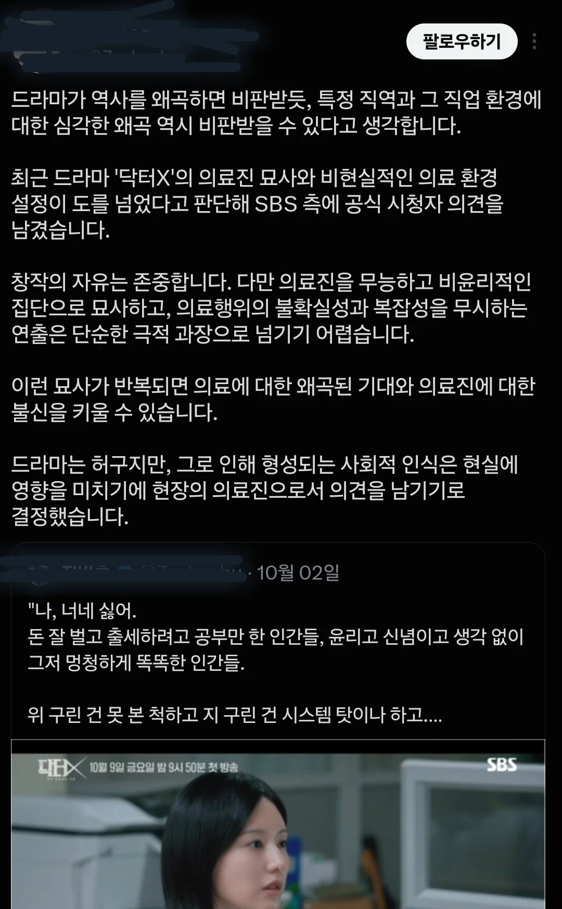

전국 / 수도권
1화 11.4 / 11.2 🔻최저
2화 14.9 / 14.7
3화 15.1 / 14.9
4화 18.5 / 18.4 🔺️최고
시청률 연전연승ㄷㄷ

전국 / 수도권
1화 11.4 / 11.2 🔻최저
2화 14.9 / 14.7
3화 15.1 / 14.9
4화 18.5 / 18.4 🔺️최고
시청률 연전연승ㄷㄷ
쟤넨 쟤네 나름대로 딜레마가 있음
가진게 공개정보 밖에 없어서 매번 가장 힘든 길만 선택하는 식으로 겨우겨우 올라왔는데 현실은 비공개정보 활용해서 딸깍으로 올라온 보딩스쿨 출신 상류층들 발밑에 깔려있는 고급노예일 뿐이라 그나마 자존감이라도 챙기려면 소위 엘리트 계층으로서의 대외적 이미지라도 유지 해야하걸랑
원래 만년 은메달리스트들 만큼 고통스러운 포지션이 없는데 문제는 여기 특효약인 안빈낙도가 평생 치열하게 싸워온 본인들과는 상극일거라..
이미 여러 사태로 의사의 의무를 저버리고 간호사도 안 한 응급, 중환자, 필수의료 버리고 시위, 동조한 시점에서 존중받는 이유인 전문성을 스스로 평판과 신뢰 훼손했으니 당연한 결과인 듯
이니셜 새긴거 실화바탕 아니냐ㅋㅋㅋㅋ 뭔 비현실적 설정드립임ㅋㅋㅋㅋㅋ
내용이 좋은건 알겠는데 개연성도 이상하고 연출이 너무 오글거림..
걍 흔해빠진 한국 드라마임 ㅋㅋㅋ
누구나 자기 직업 악마화하면 기분나쁜게 당연한거지ㅋㅋㅋ
전체 직업인 수로 볼때 실제 범죄자 수로 비교해보면 의사가 다른직업보다 굳이 더 높지도 않을건데 그냥 직업 특수성때문에 콕찝어서 패고싶은것도 맞잖아,
경비원 악마화하는 드라마에
우리아빠도 경비원이다, 좋은경비원도 많다, 악마화하지말자 이러면 그런가보다 했을건데
의사니깐 얄미워서 더 난리인거지ㅋㅋㅋ
절제용 가위를 배에 놓고 꼬매버리는 미친의레기새끼가 있다?!(사실)
그래놓고 배상하라니까 의사 면제권 들이밀며 거부하고 다른병원 들어갔다?! (사실)
의사는 목사만큼이나 쓰래기가 많은 직업이다?!(아마도 사실)
마취 시켜놓고 성폭행 해놓고 의료 행위였다며 ㅈ이 왜 거기에 들어간지 모르겟다는 의사도 있었잔아